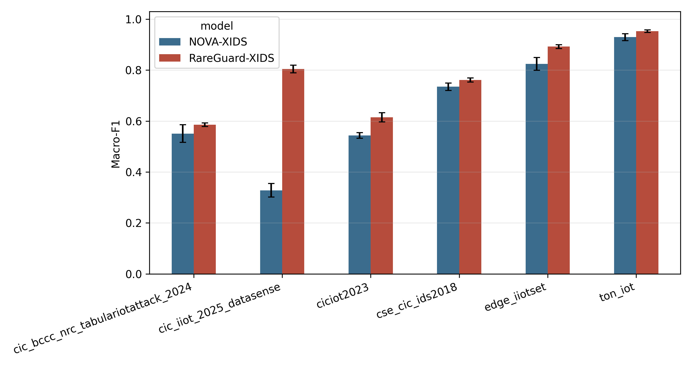
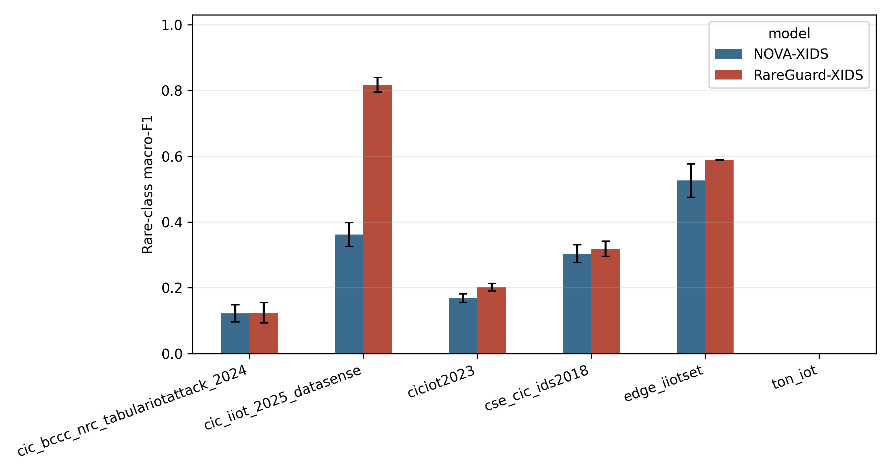
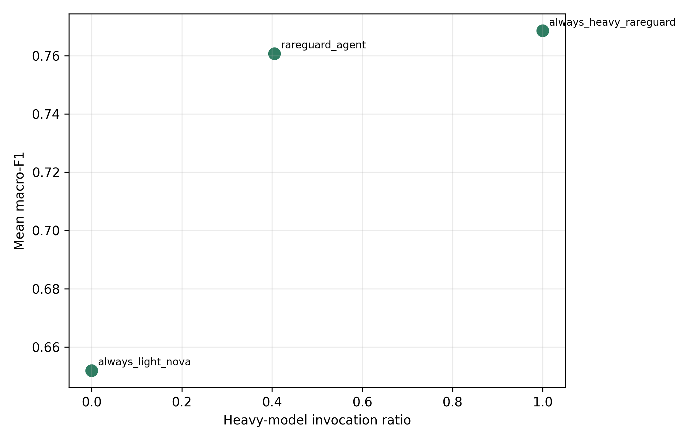
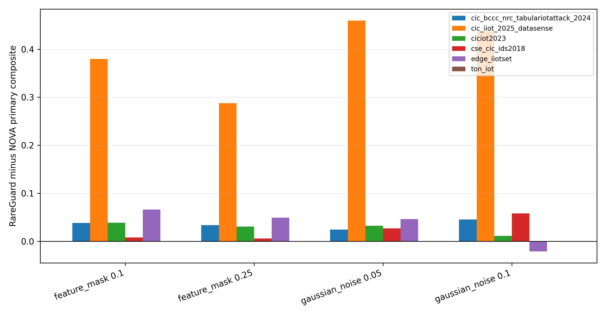
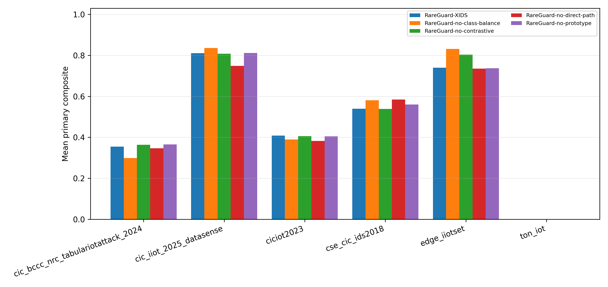

Artifact-backed decision replay
Inspect when the agent escalates—and what the evidence actually supports.
A publication-facing simulation of the RareGuard-XIDS light-to-heavy routing policy. Every event shown here comes from the saved final-v2 decision trace; no live traffic or synthetic result is presented as experimental evidence.
01 · Interactive replay
Agentic escalation under recorded network events
Select a dataset, seed, routing policy, and replay mode. Validated mode reproduces the recorded policy. What-if modes recalculate routing over the same saved scores and are labelled diagnostic—not benchmark results.
Decision path
Event — / —
01Observed eventSource index —
→
02Light detectorPrediction —
→
03Policy gateAwaiting event
→
04Heavy detectorStandby
→
05Outcome—
Predictive uncertainty—
Waiting
Rare-attack probability—
Waiting
Traffic drift score—
Waiting
Policy explanation · not feature attribution
Select Start replay to inspect the first event.
The explanation reports which saved policy signals crossed their validation-selected thresholds. It does not claim causal or SHAP-based feature attribution.
Ground truth—
Recent replay eventsRecorded event evidence
| Source index | Route | Trigger reason | Prediction | Truth | Result |
|---|---|---|---|---|---|
| No events replayed yet. | |||||
02 · Comparative evidence
Performance, calibration, and resource profile
Seed-aggregated final-v2 metrics are shown with no rank claim added by the interface. Use the dataset and metric controls to inspect where RareGuard-XIDS leads—and where it does not.
—Mean across saved seeds
Model comparisonHigher is better
Interpretation
Loading evidence…
The console will describe the displayed values without turning a local lead into a universal superiority claim.
RareGuard-XIDS—
Best comparator—
Displayed difference—



03 · Stress tests and component evidence
Robustness, ablation, continual, and federated findings
These panels preserve negative and mixed findings. A failed comparison is shown as evidence—not corrected by presentation logic.
Robustness gates—
Ablation dominance—
Continual-learning controls—
Federated operating profileMeasured means


04 · Reproducibility and claim boundary
Every visible claim stays attached to its source
The console ships with a hashed source manifest, downloaded audit files, dataset split metadata, and the compact browser bundle generator.
Readiness gates—
Required disclosures
What this simulation does not claim
View source integrity manifest — files
| Source artifact | Size | SHA-256 |
|---|